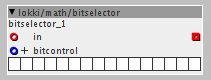
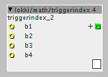
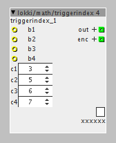

objects/subpatches:
patches:
demos

lokki/math/remapaxis
remaps the selfless mode of an axis-49 controller to the wicky hayden layout.
lokki/sel/sel dial b 8.axo & lokki/sel/dial b 11.axo
select dials, bipolar version, handy for filter presets for example. 8 and 11 dials version
lokki/bassformantvoice.axs
now updated! getting closer and closer to what i want. a gritty basssound 
lokki/bassformant.axp
bass-synth using formant-filter for vowel sounds. based on cwitz formant-synth but extended with more vowels, and f3 to get more clarity. also frequencies are a little different set, since i found other references select two vowels and morph between them via aftertouch. also has a non formanted bass out (square through vcf).
EDIT: added saturation to the bass out, and made frequency and sweep adjustable, now much more versatile and more bassy 
lokki/midi/in/channelnote.axo & lokki/midi/in/channelany.axo
output the channel of the last played note or the last "anything" received via midi.
best to use in a patch with no channel restrictions 
lokki/midi/in/keyb zone lru omni
ok, dirty hack ahead!!!
this just listens to all midi channels, even if in a subpatch with a selected channel, otherwise it does the same as the original
lokki/midi/in/touch omni
dirty hack 2...
this listens to all midi channels even in mono subpatches and so on, otherwise the same as original
lokki/math/==remap
remaps integers to other integers. if input value is out ouf range, last value in range will be remapped.
also has a hit boolean out, which is on, when values are in range...
lokki/math/accumulatorsimple
accumulates signal when inlet is positive, resets when zero or negative.
lokki/math/muls 16bit
saturated mulitply by 16bit, for those times when you want to squarify the hell ouf of a signal.
lokki/math/bitselector

filter-like effect, turn off individual bits of the output, either via the object controls or via control input. the control input is andor'd (^) with the selected bits in the object.
lokki/patches/ratereducer
some fun with sample and hold, geared towards bass-notes...nasty sounding.
lokki/math/quantizelive

bit-depth control via cc. from 1 to 28 bits.
lokki/mix/mix 4-8 gsc

like the original mix objects but for all those cases, when you distribute volume equally among sources. since i do this a lot this saves quite some time and should also be less ram hungry  other "sizes" or k-rate on request.
other "sizes" or k-rate on request.
lokki/ctrl/btn 4 i

allows you to trigger 4 events and outputs an index accordingly. index can be latched or momentary.
Hey thx looks great but I need it for external footswitches, so i need b input.
Also versions with 8 and 16 could be great for building step sequencers for example.
i'm on it. reread your initial post and thought that you needed that. will do 8 and 16 versions as well!
lokki/math/triggerindex 4 & 8 & 16

takes trigger inputs and outputs an index accordingly, index can be latching or momentary. only one switch at a time.
UPDATE
more robust implementation, now also more then one trigger at a time can be processed. there are 4 user definable switch combinations, that will trigger index 5 to 8. also there is now an enc output, which is esentially the four triggers encoded into one 4-bit value (like the encode object in the library)

best is to connect the triggers and look at the numbers displayed in the lower right corner of the object. these are the values you enter into c1-c4 for your switch combinations. an example:
if you want to trigger index 5 by pressing b1 and b2 you would need to set c1 to 3. (since that is what is displayed for pressing the first two switches)
explanation:
3 in binary is 0011, which is the same as the two first switches pressed
{kind=link}